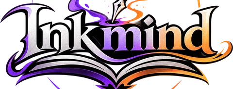

Termos de Uso
Versão de 18 de novembro de 20261. Aceitação
Ao criar uma conta, entrar como visitante ou usar o Inkmind, você concorda com estes Termos e com a Política de Privacidade. O Inkmind é mantido por a equipe do Inkmind (contato: github.com/R4Z1e/InkMind).
2. O serviço
O Inkmind é uma ferramenta para escrever livros, organizar mundos e jogar RPG de mesa online. O uso é gratuito. Podemos mudar, adicionar ou retirar funções a qualquer momento, procurando avisar com antecedência quando a mudança afetar o seu conteúdo.
3. Contas e visitantes
- Com conta, você pode escrever, criar mesas, mestrar e publicar. Mantenha seu acesso seguro; você responde pelo que é feito na sua conta.
- Visitantes (sem conta) só podem jogar em mesas públicas. Não escrevem livros, não criam mesas, não mestram e não publicam.
- Menores de 13 anos não devem usar o Inkmind. Adolescentes devem usar com autorização dos responsáveis.
4. Seu conteúdo
- Os direitos sobre o que você cria continuam seus.
- Ao publicar em Explorar ou usar uma mesa, você nos autoriza a armazenar, exibir e transmitir esse conteúdo às pessoas com acesso a ele, só para fazer o serviço funcionar. A autorização termina quando você despublica ou apaga o conteúdo.
- Você garante que tem o direito de publicar o que publica, inclusive imagens e textos de terceiros.
- Faça cópias do que é importante para você (em Exportar → Baixar backup). Fazemos o possível para manter seus dados, mas não garantimos que nunca haverá perda.
5. Regras de conduta
É proibido usar o Inkmind para publicar, enviar ou praticar:
- conteúdo sexual envolvendo menores de idade, em qualquer forma — será removido e comunicado às autoridades;
- discurso de ódio, discriminação, apologia à violência ou ao terrorismo;
- assédio, ameaças, perseguição ou exposição de dados pessoais de outras pessoas;
- conteúdo sexual explícito em publicações e mesas públicas;
- spam, golpes, links maliciosos ou tentativa de obter senhas;
- cópia de obras protegidas por direitos autorais sem autorização;
- tentativas de burlar a segurança, acessar dados de outras pessoas ou sobrecarregar o serviço.
Em mesas de jogo, o mestre pode definir regras próprias e remover jogadores da mesa dele.
6. Denúncias e moderação
Qualquer pessoa pode denunciar publicações e mesas pelo botão ⚑ Denunciar, e bloquear autores para não ver o conteúdo deles. A moderação pode ocultar conteúdo público, fechar mesas públicas e encerrar contas que violem estes Termos ou a lei, sem aviso prévio em casos graves.
7. Encerramento
Você pode excluir sua conta a qualquer momento em Minha conta → Excluir minha conta. Podemos encerrar contas que violem estes Termos.
8. Garantias e responsabilidade
O Inkmind é oferecido gratuitamente, "no estado em que se encontra". Fazemos o possível para mantê-lo no ar e seguro, mas não garantimos funcionamento sem interrupções ou erros. Cada pessoa é responsável pelo conteúdo que publica. Nada nestes Termos limita direitos que a lei garante a você como consumidor.
9. Mudanças nos Termos
Podemos atualizar estes Termos. Mudanças importantes serão avisadas no app, e a data da versão fica no topo desta página. Se continuar usando depois da mudança, você concorda com a nova versão.
10. Lei aplicável
Estes Termos seguem as leis do Brasil. Fica eleito o foro do domicílio do usuário para resolver eventuais conflitos.
← Voltar ao Inkmind